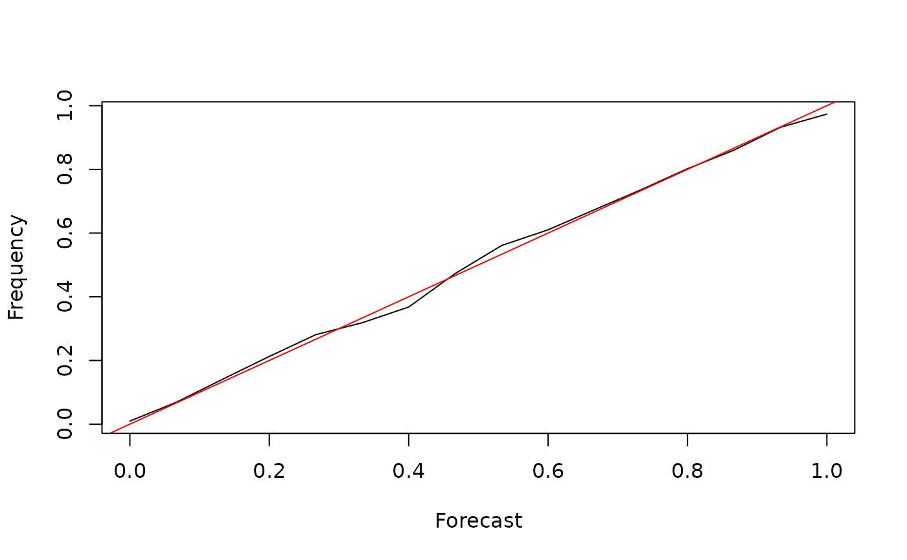
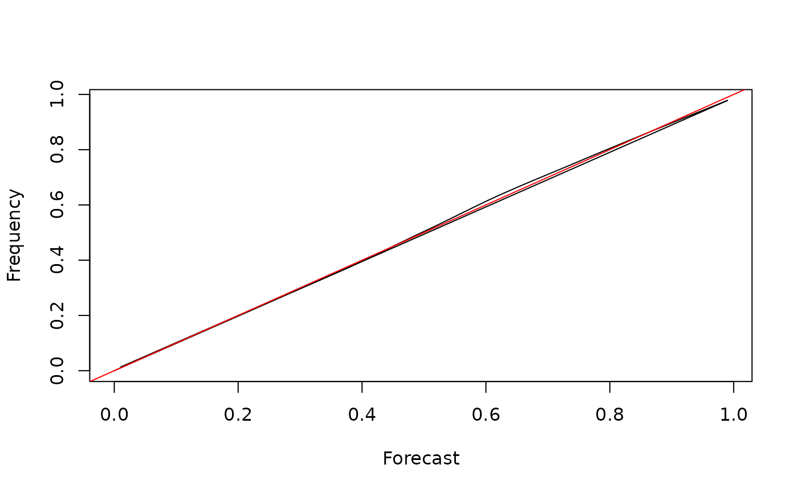

Estimate calibration given forecasts and corresponding outcomes
Source:R/calibration.R
compute_calibration.RdEstimate calibration given forecasts and corresponding outcomes
Usage
compute_calibration(
forecast,
outcome,
method = c("smoothing", "binning"),
CI = NULL,
binwidth = NULL,
...
)Arguments
- forecast
Vector of probability forecasts.
- outcome
Vector of observations (0 or 1).
- method
Method used to estimate calibration, either
"smoothing"or"binning".- CI
Confidence level (e.g. 0.95). CI not computed if
NULL(CI can be expensive to compute for LOWESS).- binwidth
Binwidth when calibration is estimated by binning. If
NULL, automatic bin width selection with Sturges' method.- ...
Arguments of
stats::loess()function (e.g. span).
Value
Dataframe with columns Forecast (bins), Frequency (frequency of outcomes in the bin),
Lower (lower bound of the CI) and Upper (upper bound of the CI).
Examples
N <- 1e4
f <- rbeta(N, 1, 1)
o <- sapply(f, function(x) {
rbinom(1, 1, x)
})
lapply(
c("binning", "smoothing"),
function(m) {
cal <- compute_calibration(f, o, method = m)
with(cal, plot(Forecast, Frequency, type = "l"))
abline(c(0, 1), col = "red")
}
)


#> [[1]]
#> NULL
#>
#> [[2]]
#> NULL
#>